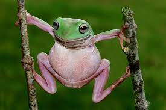

Made by: Silvia, 8 klasė
Varlės (Ranidae) – beuodegių varliagyvių (Anura) šeima.
Gyvūnų oda lygi arba nežymiai rauplėta. Akys su horizontaliu vyzdžiu, turi judamus vokus.
Patinų galvos šonuose yra balso maišai (rezonatoriai), kurie kvarkiant išsipučia.
Dokumentika apie varles:.
Dokumentika